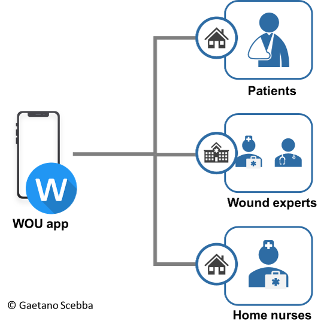

WOU
What is a good sign for a healing wound? To answer this question, current clinical practice mainly relies on subjective visual inspection and lacks accurate assessment of the wound healing status. In collaboration with Balgirst University Hospital and University Hospital Zurich, we developed WOU, a mobile app for intelligent and more accurate wound assessment.
Chronic wounds have large negative impact on quality of life of patients and represent a substantial economic burden to healthcare systems worldwide. Clinical assessment of chronic wounds is based on the wound visual inspection. Features such as area, depth, and colors are subjectively determined and used to assess the wound status.

With the WOU app, we developed a mHealth tool for intelligent wound monitoring. The WOU app is equipped with dedicated computer vision and machine learning algorithms to quantitatively assess important wound features and enabling not only clinicians at the hospital but also patients at home to perform high quality wound monitoring.
Thanks to the fruitful collaboration with Balgirst University Hospital and University Hospital of Zurich, we conducted two clinical studies on patients with digital ulcers and diabetic foot ulcers with the aim to of evaluating the accuracy of our WOU app. Furthermore, the collected data are currently being analyzed for the investigation of potential digital biomarkers that can help clinicians to better predict wound healing.